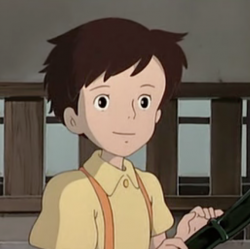
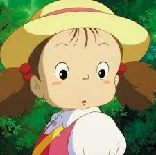
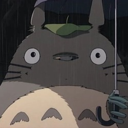
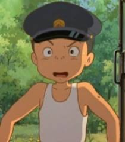
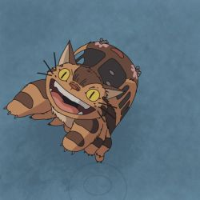

Sacuki Kusakabe (草壁皐月 Kusakabe Satsuki) - Jedenáctiletá dívka, hlavní postava filmu
Mei Kusakabe (草壁メイ Kusakabe Mei) - Sacukina čtyřletá sestra
Tacuo Kusakabe(草壁達夫 Kusakabe Tacuo) - Otec dívek. Pracuje na Tokijské univerzitě
Jasuko Kusakabe (草壁靖子 Kusakabe Jasuko) - Matka dívek. Hospitalizovaná kvůli nespecifikované chorobě v Šičikokujamské nemocnici
Totoro (トトロ) - Titulní postava filmu. Lesní duch, žijící v kořenech obřího kafrovníku a vystupující v podobě přibližně třímetrového savce pokrytého šedou srstí. (Ve filmu se rovněž vyskytují dvě podobná leč výrazně menší s Totorem spřízněná lesní stvoření rovněž nazývána Totoro)
Kanta Ogaki (大垣寛太 Ogaki Kanta) - Vesnický chlapec, vrstevník Sacuki
Kočkobus (猫バス Nekobasu) - mnohonohá obří kočka, jejíž tělo je schopné se proměnit v autobus